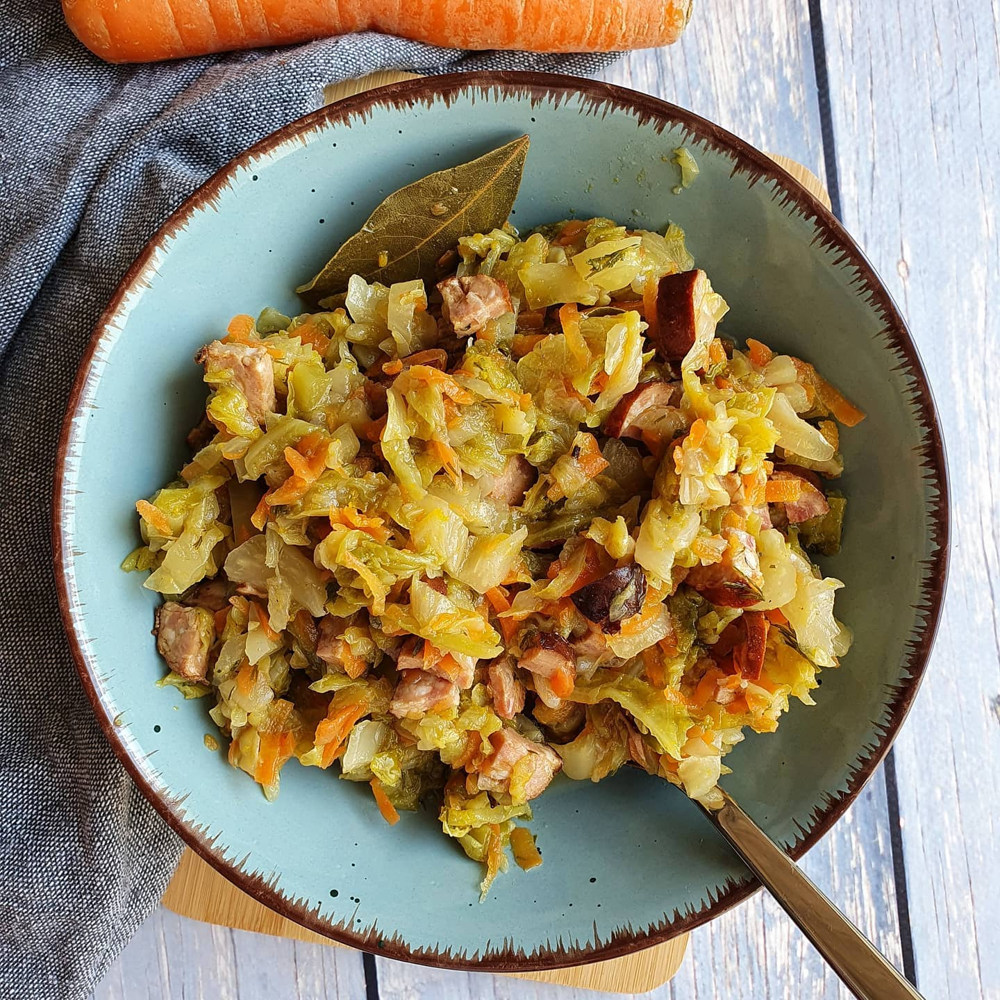

Kapusta podľa @przyjemne.gotowanie — Normy Jedál
Dzień dobry 😊 Już od kilku dni chodziła za mną młoda kapusta, aż w końcu jest 😁 Pyszna zasmażana kapusta z kiełbaską 🥬🥓🍽 pycha 🥰 przepis:
- 2 małe główki młodej kapusty
- 300 g dobrej kiełbasy
- 1 duża cebula
- 2 marchewki
- pęczek koperku
- łyżeczka kminku
- 2 liście laurowe
- 3 ziela angielskie
- 2 łyżki śmietany
- łyżka mąki
- sól, pieprz
Cebulę posiekaj, marchewkę zetrzyj na tarce o dużych oczkach, kapustę obierz i drobno poszatkuj. Na patelni lub w garnku rozgrzej olej i podsmaż cebulkę, dodaj marchewkę, chwilę podsmaż. Dodaj kapustę, pomieszaj, dodaj przyprawy i szklankę wody. Duś przez ok 1 h. W tym czasie pokrój w kostkę kiełbasę i podsmaż na drugiej patelni, dodaj do kapusty. Posiekaj koperek, mąkę wymieszaj ze śmietaną. Gdy kapusta będzie miękka dodaj koperek, śmietanę i zagotuj. Dopraw do smaku solą i pieprzem 🧂🥄 Smacznego 😊
Dobrego czwartku 🙂🙃
#kapusta #młodakapusta #kapustazasmażana #bigos #kiełbasa #koperek #obiad #kuchniapolska #warzywa #kuchniaregionalna #kuchniatradycyjna #gotowanie #kuchnia #dinner #pomysłnaobiad #domowyobiad #foodie #pysznyobiad #kuchnia #smacznego #meat